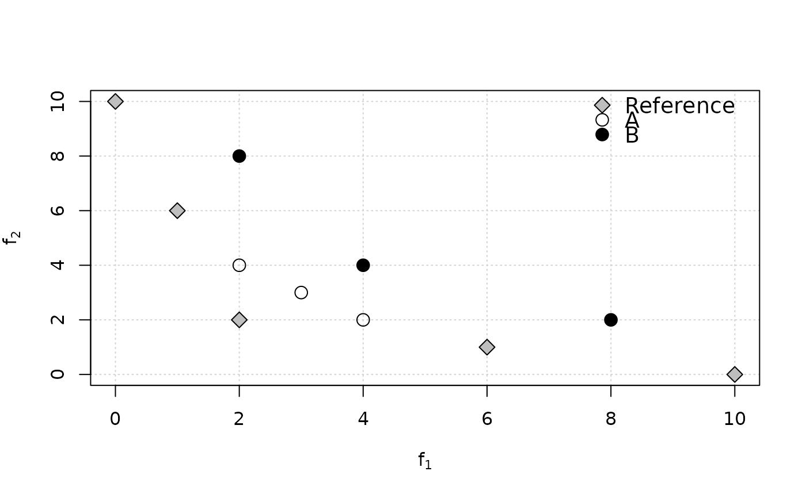

R/igd.R
igd.RdFunctions to compute the inverted generational distance (IGD and IGD+) and the averaged Hausdorff distance between nondominated sets of points.
igd(data, reference, maximise = FALSE)
igd_plus(data, reference, maximise = FALSE)
avg_hausdorff_dist(data, reference, maximise = FALSE, p = 1L)(matrix | data.frame)
Matrix or data frame of numerical
values, where each row gives the coordinates of a point.
(matrix | data.frame)
Reference set as a matrix or
data.frame of numerical values.
(logical() | logical(1))
Whether the objectives must be
maximised instead of minimised. Either a single logical value that applies
to all objectives or a vector of logical values, with one value per
objective.
(integer(1)) Hausdorff distance parameter (default: 1L).
(numeric(1)) A single numerical value.
The generational distance (GD) of a set \(A\) is defined as the distance between each point \(a \in A\) and the closest point \(r\) in a reference set \(R\), averaged over the size of \(A\). Formally,
$$GD_p(A,R) = \left(\frac{1}{|A|}\sum_{a\in A}\min_{r\in R} d(a,r)^p\right)^{\frac{1}{p}} $$ where the distance in our implementation is the Euclidean distance: $$d(a,r) = \sqrt{\sum_{k=1}^M (a_k - r_k)^2} $$
The inverted generational distance (IGD) is calculated as \(IGD_p(A,R) = GD_p(R,A)\).
The modified inverted generational distanced (IGD+) was proposed by
Ishibuchi et al. (2015)
to ensure that IGD+ is weakly Pareto compliant,
similarly to epsilon_additive() or epsilon_mult(). It modifies the
distance measure as:
$$d^+(r,a) = \sqrt{\sum_{k=1}^M (\max\{r_k - a_k, 0\})^2}$$
The average Hausdorff distance (\(\Delta_p\)) was proposed by Schütze et al. (2012) and it is calculated as:
$$\Delta_p(A,R) = \max\{ IGD_p(A,R), IGD_p(R,A) \}$$
IGDX (Zhou et al. 2009)
is the application of IGD to decision vectors
instead of objective vectors to measure closeness and diversity in decision
space. One can use the functions igd() or igd_plus() (recommended)
directly, just passing the decision vectors as data.
There are different formulations of the GD and IGD metrics in the literature that differ on the value of \(p\), on the distance metric used and on whether the term \(|A|^{-1}\) is inside (as above) or outside the exponent \(1/p\). GD was first proposed by Van Veldhuizen and Lamont (1998) with \(p=2\) and the term \(|A|^{-1}\) outside the exponent. IGD seems to have been mentioned first by Coello Coello and Reyes-Sierra (2004) , however, some people also used the name D-metric for the same concept with \(p=1\) and later papers have often used IGD/GD with \(p=1\). Schütze et al. (2012) proposed to place the term \(|A|^{-1}\) inside the exponent, as in the formulation shown above. This has a significant effect for GD and less so for IGD given a constant reference set. IGD+ also follows this formulation. We refer to Ishibuchi et al. (2015) and Bezerra et al. (2017) for a more detailed historical perspective and a comparison of the various variants.
Following Ishibuchi et al. (2015) , we always use \(p=1\) in our implementation of IGD and IGD+ because (1) it is the setting most used in recent works; (2) it makes irrelevant whether the term \(|A|^{-1}\) is inside or outside the exponent \(1/p\); and (3) the meaning of IGD becomes the average Euclidean distance from each reference point to its nearest objective vector). It is also slightly faster to compute.
GD should never be used directly to compare the quality of approximations to a Pareto front, as it often contradicts Pareto optimality. We recommend IGD+ instead of IGD, since the latter contradicts Pareto optimality in some cases (see examples below), but we implement IGD here because it is still popular due to historical reasons. We are not aware of any proof of whether \(\Delta_p(A,R)\) contradicts or not Pareto optimality, thus it must be used with care.
Leonardo
C.
T. Bezerra, Manuel López-Ibáñez, Thomas Stützle (2017).
“An Empirical Assessment of the Properties of Inverted Generational Distance Indicators on Multi- and Many-objective Optimization.”
In Heike Trautmann, Günter Rudolph, Kathrin Klamroth, Oliver Schütze, Margaret
M. Wiecek, Yaochu Jin, Christian Grimme (eds.), Evolutionary Multi-criterion Optimization, EMO 2017, Lecture Notes in Computer Science, 31--45.
Springer International Publishing, Cham, Switzerland.
doi:10.1007/978-3-319-54157-0_3
.
Carlos
A. Coello Coello, Margarita Reyes-Sierra (2004).
“A Study of the Parallelization of a Coevolutionary Multi-objective Evolutionary Algorithm.”
In Raúl Monroy, Gustavo Arroyo-Figueroa, Luis
Enrique Sucar, Humberto Sossa (eds.), Proceedings of MICAI, volume 2972 of Lecture Notes in Artificial Intelligence, 688--697.
Springer, Heidelberg, Germany.
Hisao Ishibuchi, Hiroyuki Masuda, Yuki Tanigaki, Yusuke Nojima (2015).
“Modified Distance Calculation in Generational Distance and Inverted Generational Distance.”
In António Gaspar-Cunha, Carlos
Henggeler Antunes, Carlos
A. Coello Coello (eds.), Evolutionary Multi-criterion Optimization, EMO 2015 Part I, volume 9018 of Lecture Notes in Computer Science, 110--125.
Springer, Heidelberg, Germany.
Oliver Schütze, X Esquivel, A Lara, Carlos
A. Coello Coello (2012).
“Using the Averaged Hausdorff Distance as a Performance Measure in Evolutionary Multiobjective Optimization.”
IEEE Transactions on Evolutionary Computation, 16(4), 504--522.
David
A. Van Veldhuizen, Gary
B. Lamont (1998).
“Evolutionary Computation and Convergence to a Pareto Front.”
In John
R. Koza (ed.), Late Breaking Papers at the Genetic Programming 1998 Conference, 221--228.
A Zhou, Qingfu Zhang, Yaochu Jin (2009).
“Approximating the set of Pareto-optimal solutions in both the decision and objective spaces by an estimation of distribution algorithm.”
IEEE Transactions on Evolutionary Computation, 13(5), 1167--1189.
doi:10.1109/TEVC.2009.2021467
.
# Example 4 from Ishibuchi et al. (2015)
ref <- matrix(c(10,0,6,1,2,2,1,6,0,10), ncol=2, byrow=TRUE)
A <- matrix(c(4,2,3,3,2,4), ncol=2, byrow=TRUE)
B <- matrix(c(8,2,4,4,2,8), ncol=2, byrow=TRUE)
plot(ref, xlab=expression(f[1]), ylab=expression(f[2]),
panel.first=grid(nx=NULL), pch=23, bg="gray", cex=1.5)
points(A, pch=1, cex=1.5)
points(B, pch=19, cex=1.5)
legend("topright", legend=c("Reference", "A", "B"), pch=c(23,1,19),
pt.bg="gray", bg="white", bty = "n", pt.cex=1.5, cex=1.2)

cat("A is better than B in terms of Pareto optimality,\n however, IGD(A)=",
igd(A, ref), "> IGD(B)=", igd(B, ref),
", which contradicts it.\nBy contrast, IGD+(A)=",
igd_plus(A, ref), "< IGD+(B)=", igd_plus(B, ref), ", which is correct.\n")
#> A is better than B in terms of Pareto optimality,
#> however, IGD(A)= 3.707092 > IGD(B)= 2.591483 , which contradicts it.
#> By contrast, IGD+(A)= 1.482843 < IGD+(B)= 2.260113 , which is correct.
# A less trivial example.
extdata_path <- system.file(package="eaf","extdata")
path.A1 <- file.path(extdata_path, "ALG_1_dat.xz")
path.A2 <- file.path(extdata_path, "ALG_2_dat.xz")
A1 <- read_datasets(path.A1)[,1:2]
A2 <- read_datasets(path.A2)[,1:2]
ref <- filter_dominated(rbind(A1, A2))
igd(A1, ref)
#> [1] 91888189
igd(A2, ref)
#> [1] 11351992
# IGD+ (Pareto compliant)
igd_plus(A1, ref)
#> [1] 82695357
igd_plus(A2, ref)
#> [1] 10698269
# Average Haussdorff distance
avg_hausdorff_dist(A1, ref)
#> [1] 268547627
avg_hausdorff_dist(A2, ref)
#> [1] 352613092